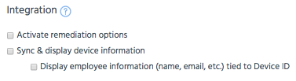

This section outlines the features in Appthority Connector for integration with your EMM. These are the details of how Appthority’s Integration features impact Data Privacy. Starting with the default sync options in Appthority’s EMM Configuration settings, each integration feature you select collects and transfers different data.
Connector On-Premises assesses EMM devices against active app policies.
All device remediation calculations are done behind the firewall and on the customer’s network.
| AirWatch | MobileIron and XenMobile |
|
|
 |
For each of the options selected, details of the data exchanged is displayed in the table.
| DATA EXCHANGE DETAILS | |
|---|---|
| MobileIron and XenMobile | |
| Default sync
(no integration options selected) |
|
| AirWatch | |
| Sync App inventory and Appthority app policies with AirWatch |
|
| Use AirWatch App Scan OR | Connector shares active app policies with AirWatch for remediation via App Scan. |
| Enable app policy remediation using AirWatch Smart Device Groups | Connector shares active app policies with AirWatch for remediation via AirWatch smart groups. |
| MobileIron and XenMobile | |
| Activate remediation options |
|
| Common (all EMMs) | |
| Sync device information (both wordings) | Appthority Connector collects only the anonymous device ID and displays the ID in the Devices tab of Appthority Portal. |
| Display employee information (name, email, etc.) tied to Device ID | Personal details associated with devices, such as name and email, will be collected and displayed in Appthority Portal. |